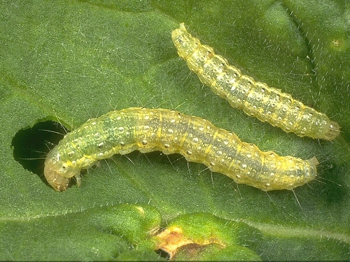

|  | Ulat perusak daun (Plutella xylostella) |
Hama ulat daun kubis Plutella xylostella L. (Lepidoptera: Plutellidae) merupakan salah satu jenis hama utama di pertanaman kubis. Apabila tidak ada tindakan pengendalian, kerusakan kubis oleh hama tersebut dapat meningkat dan hasil panen dapat menurun baik jumlah maupun kualitasnya. Adapun klasifikasi dari P. xylostellayaitu Kingdom : Animalia, Filum : Arthropoda, Kelas : Insecta, Ordo : Lepidoptera, Family : Yponomeutidae, Genus : Plutella, Spesies : P. xylostella. Gejala : permukaan daun akar rusak, berlubang dan tidak rata, serta daun akan kering. |
|